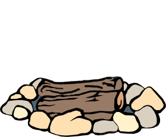

The Sweet Smell of Springtime in Bloom
Each Year the World is Swallowed by Cold,
the Somber Gloom's Presence, returning Anew
As Season's End leads this Chill to Unfold
a Frost on the Ground forms where once there was Dew
Soon the Plantlife has Faded, 'til even the Few
Still-standing Flowers have Begun to Wither
The Outdoors then Lose their Brilliant Hue
Weakness, Exhaustion, Hibernation brought Hither
Now this Cloud Descends upon the Young and Old
and the Aim of our Next Season is Clear
Each must Endure the Elements Uncontrolled
And try to wait for a New Year.
My Friends, it can seem Difficult to remain Optimistic when it seems that Spring is so far away. After many Months of Beauty and Joy, living and working in Harmony with the World, it can feel Devastating to lose that Gift. You can see the Life around you become Muffled, Buried beneath a Blanket of Snow. You can feel the same happening to your Inner Flame, and it can feel like you have been Extinguished, Separated from the Passion you once Knew. You may become Ill, feeling Naught but a Cold, Deep Dread settling over you.
In Times like these, you must remain Focused on the Truths that you Know to be Constant. As the Seasons are a Continuous Cycle of Harvest and Famine, of Warmth and Cold, so too our Emotions form Cycles, and follow Patterns of Hills and Valleys. There is a time for Work, and a time for Rest. There is a time to Speak, and a time to Listen. There is a time to Produce, and a time to Consume. This Cycle is Aligned with the ever-flowing Harmony of Creation, and it is in Accordance with our World.
Always remember that the Winter, and so too the Depths of Despair that may Wash over you, never lasts forever. Spring will Return, new Life will be Born to the World, and Passion will again Spark within you. While you await this Renewal to take place, treat your Body and your Mind as a Delicate Flower. Take care of yourself. Cultivate good Habits. Let the Sun's Life-Giving Rays shine upon you, and let the Fresh Air of the Wilderness reawaken your Primal Instincts. Remember to Maintain your Health, lest you allow yourself to Wilt.
There will come a Time when you are again Rekindled, a new Spring when the Days seem to be growing Brighter and Brighter, and the Nights shorter and shorter. At this time, the Seeds you have Sown will take Root, and your Passion will Sprout Stronger than ever. The Sun will Shine upon you, you will again Enjoy the Beauty of the World, and you will Witness the Majesty of the Flowers. The Despair, Pain and Illness that Cover you are Temporary, and will Melt away as your Life becomes Warmer. You must only Endure the Season of Cold for as long as it Proceeds.
As you await the Blessed Coming of Spring, if you find it Exhausting to Continue, when it feels like the Cold will never End... If you Wish to Escape from the Bleakness of the World Outside, you are Always Welcome to Enter the Sanctum of my Flower Shop. Even in the Dimmest and Coldest of Seasons, the Flower Shop stands as a Haven and a Sanctuary for the Growing and Flourishing of Wondrous Flowers. Your Presence and your Business are Appreciated by my Flowers and I, and the Posies that Call my Shop their Home do Grow ever-so-lonely without Visitors to keep them Company, or to perhaps even take them to New Homes beyond the Shop's walls.
My Desire is always to Share what I have Grown with Others, to allow them to Witness the Fruit of my Passions.
I take great Pride in my Creations and my Cultivations.
The Magic they hold gives me Strength, and sustains my Life.
May the Flowers that I have Nurtured bring Bliss to the World.
Dear Friend, if you should Happen across a Rich Green Flame while on your Travels across this Blessed World...
Reach your Claw out and Touch it, and Imbue yourself with its Essence.
If you can Bring such a Verdant Essence back here and Place it upon this Kindling...
The Embers shall come Alive with Beauty and Joy.


The Flame burns Brightly with the Life you Poured unto it.
You have Cultivated a Bloom from the Seeds of the Embers.
Now Gather from the Flowers their Petals, their Pollen,
and Sprinkle them upon the Altar to Realize their True Substance.
Oh Sunbeam... Oh Sunbeam... I have Dreamt of you Anew.
Where are you, my Sunbeam? When will our Time to Meet finally Arrive?
I Know that we are Destined to Dance Together...
That Someday, when the Stars Align, we shall Finally Meet...
And the Life I Live will be Complete.
Sunbeam, wherever you are in this World of Life and Magic...
Always Remember to Stop and Smell the Flowers. The Simple Joys of Life are what allow us to achieve Harmony with the Universe.
The Essence that Surrounds us gives us our Unique Duality.
I can feel, oh Sunbeam... You are a Special One. I have Traveled the World yet I have met not Another who could Match my Passion. But you, Sunbeam... You are Different. You follow the Rhythm of your own Song. You are the Heart of your own Legend.
The Turning of Seasons brings New Chances, brings New Dances...
Perhaps, when the World Above reaches Spring...
Perhaps our Time to Meet will Finally Come.
I will Await your Arrival, my Sunbeam.